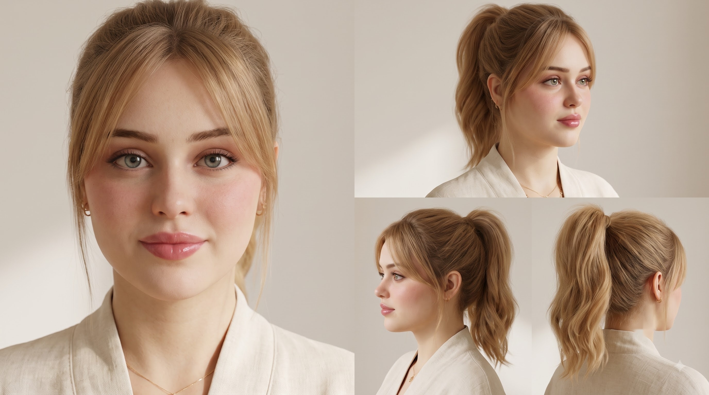
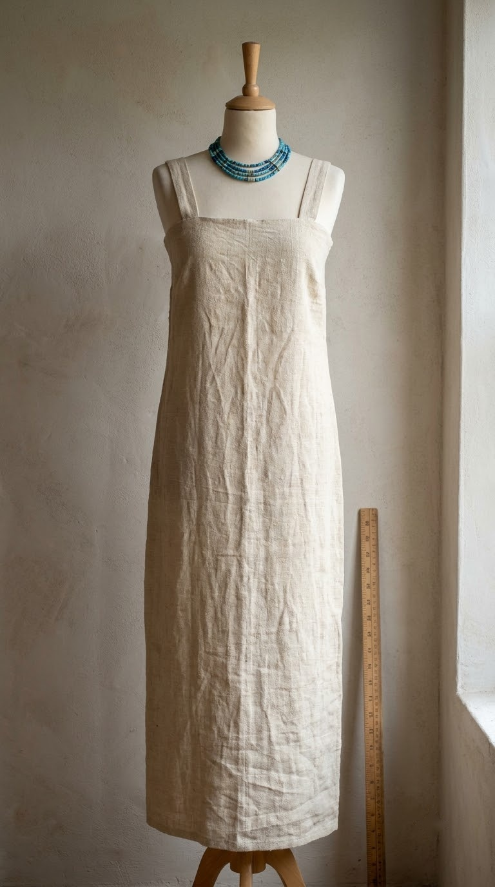
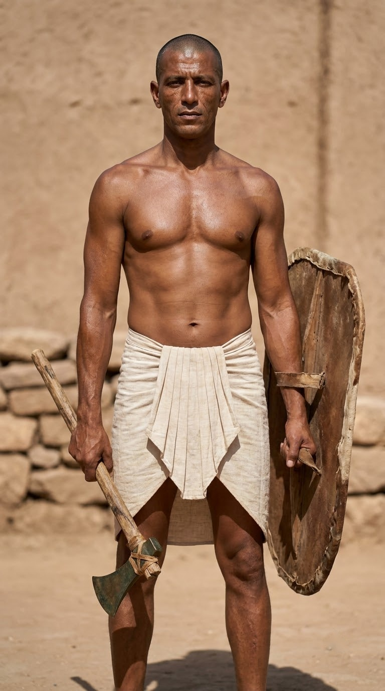
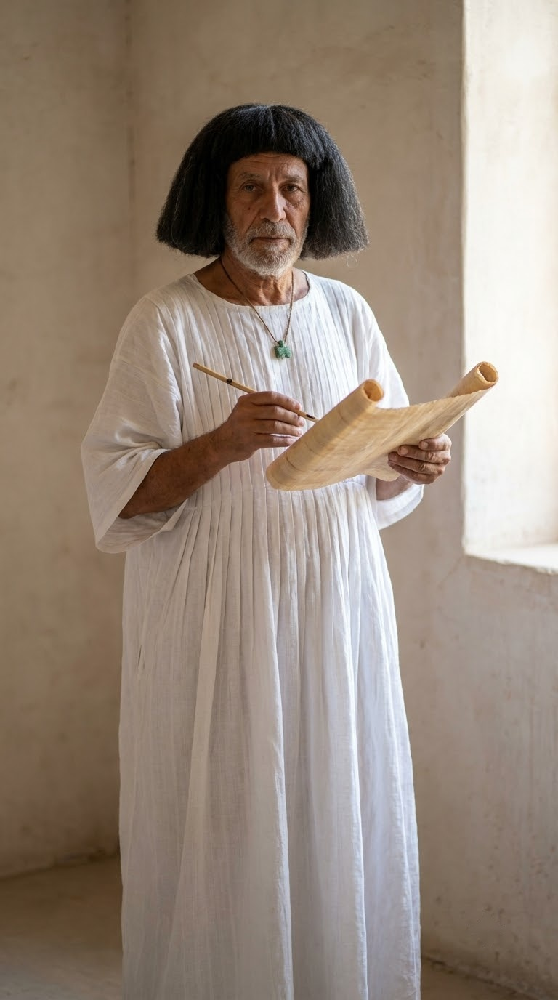
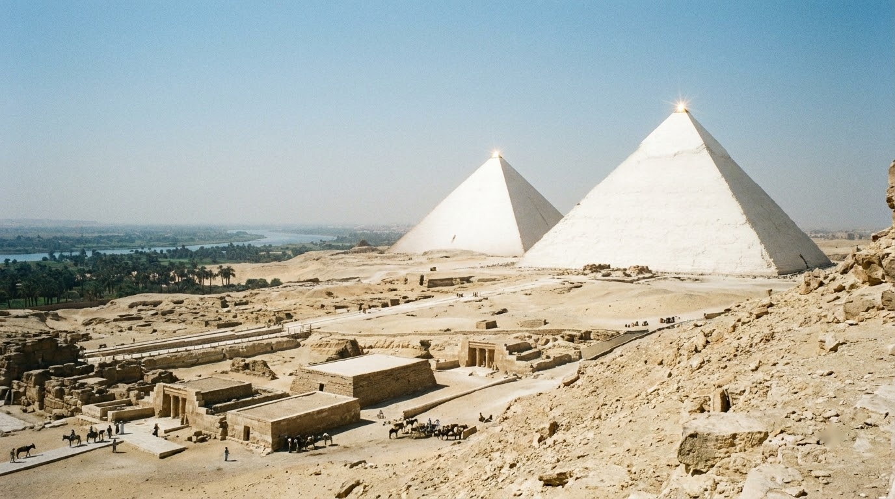
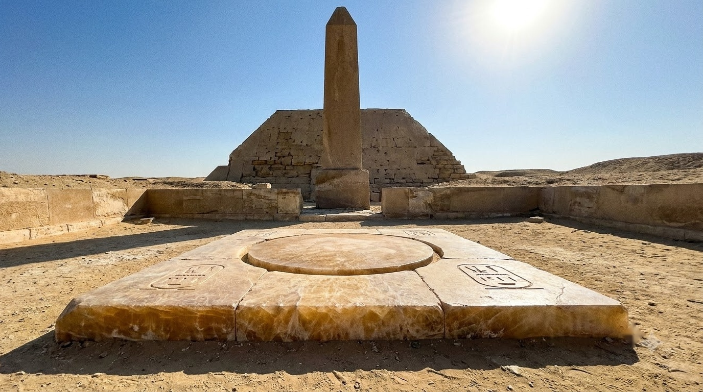
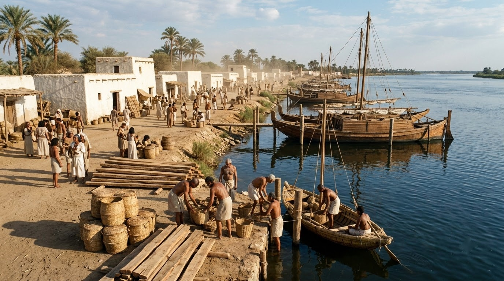

Dự án: Ancient Egypt 2400 BC (Old Kingdom, 5th Dynasty) — Toàn bộ 7 ảnh Reference đã tẩy sạch watermark & SynthID theo Rule 28, sẵn sàng nạp thẳng vào model R2V (abra_r2v).

Khuôn mặt gốc được khóa 100% từ ảnh của bạn (F:\affilate\main.jpg): tóc vàng mật ong uốn sóng cao, mái bay curtain bangs, gương mặt mềm mại thanh tú.

Váy lanh dệt mộc kalasiris cổ đại Ai Cập thế kỷ 24 TCN với hai quai đeo vai, độ nhăn tự nhiên, viền cổ đính hạt ngọc lam (turquoise beads).

Lính gác tuần tra Memphis: da ngăm đồng, đầu cạo sát, váy xếp nếp tam giác (shendyt), tay cầm khiên gỗ bọc da bò và rìu đồng buộc dây da acacia.

Tể tướng 62 tuổi uy nghiêm với tóc giả học giả len đen, áo lanh dài xếp nếp, bùa hộ mệnh Ma'at ngọc serpentine xanh lục, tay cầm cuộn giấy papyrus và bút sậy.

Đại Kim Tự Tháp Khufu & Khafre trên cao nguyên đá vôi Giza cao 60m. Toàn bộ thân tháp ốp đá vôi Tura trắng mịn phẳng lì; chóp nhọn pyramidion electrum nhỏ xíu lóe sáng dưới nắng trưa; lăng mộ mastaba phẳng mái ở tiền cảnh; thung lũng sông Nile ở xa.

Bàn thờ tế lễ tại Đền Mặt Trời Nyuserre: 5 phiến đá Alabaster Ai Cập nguyên khối màu vàng mật ong mờ sáng gồm đĩa tròn trung tâm (mặt trời Ra) và 4 phiến khắc phù điêu 'Hotep' phẳng, phía sau là bệ tháp obelisk đá cụt giữa sân trời.

Bến cảng sông nước sầm uất tại thủ đô Memphis năm 2400 TCN: nhà kho gạch bùn quét vôi trắng, rặng cọ, thuyền skiff bằng sậy papyrus và thuyền buồm gỗ tuyết tùng cập bến chở đá và lương thực.